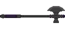 |
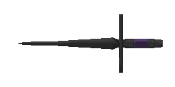 |
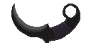 |
Forgiver |
Misericorde |
Karambit |
It is a battle axe forged in blessed tungsten, an indispensable ritual weapon in the rites of salvation you perform. |
A knife with a thick and sharp blade that can pierce through the gap in armour. |
This is the smallest and lightest of the close proximity ritual weapons and can be used in both hands. |
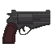 |
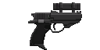 |
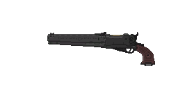 |
Snub Magnum |
.44 Automag |
Meta-Magnum |
.44 Snub Magnum is a reliable DA/SA revolver capable of firing both .44 magnum bullets and .41 shotgun shells. It can also perform a fanning shot. |
.44 Automag Mega-Class is a semi-automatic pistol with excellent controllability. With a heavy slide, it can fire the powerful .44 round with the minimum amount of recoil. |
Meta Magnum MK-II is a semi-automatic sidearm with a fixed tubular magazine. It has great controllability in exchange for it's long barrel and it's front heavy weight balance. It also shows excellent accuracy for a sidearm and can project powerful .44 Magnum rounds to a mid-range target. |
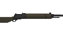 |
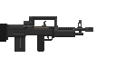 |
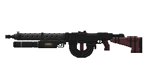 |
Breechloader |
Storm Rifle |
Machine Rifle |
This obsolete M11873 "Breechloader" is a single-shot rifle chambered with 7.62 x 51mm ammunition and still serves as a survival rifle because of its reliability. It lacks a firepower, but by adding pellets from the muzzle, it can fire powerful spreadshot in exchange for the life of the barrel. |
XM-91 "Storm Rifle," is a bullpup assault rifle with a short-stroke piston and a closed-bolt mechanism, and is smaller and lighter than the previous A1 automatic rifle, but has a equivalent firepower. The blank cartridges are ejected in a forward direction. |
The Machine Rifle A2 is a modernized version of the previous A1 Auto Rifle, and its design has been simplified compared to the previous, more expensive model. Although the bolt stop has been removed, reliability has been improved and its firepower is equivalent. Also the high-energy laser emitter under the barrel is still present. |
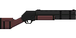 |
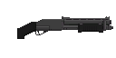 |
|
Arquebus |
Sawn-Off Repeater |
Shockhammer Mod.II |
This "Archibus" double-barreled shotgun is a very reliable firearm that can be loaded with two powerful 8-gauge shells. It can fire from a 0000 buckshot to birdshot and slug. |
The "Sawn-off Repeater" is an 8-gauge shotgun with a fixed tube magazine and pump action mechanism. It has a slam-fire mechanism and can be fired in rapid succession by moving the forend while pulling the trigger. |
The "Shockhammer MOD II" is a gas-piston automatic shotgun with a fixed drum magazine. ... To be honest, this kind of sacred irons have a limited application. Even if you set up a barrage with a high rate of fire, you can't expect to be able to suppress the opponents with small pellets. They are only useful where you can hit the opponent with your eyes closed because there are so many of them. In other words, it's now. Too bad. |
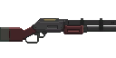 |
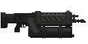 |
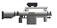 |
Cavalry |
Heavy MG |
Xeta Rifle |
The "Cavalry Carbine" is a lever-action scout rifle that uses12.7x99mm dumdum rounds that are effective against soft targets. It is a highly adaptable weapon that can be used at short to medium ranges, depending on the user's ability. |
Although it is called a "Heavy MG," it is really a GPMG with an air-cooled barrel, long-stroke piston, and open bolt mechanism. With its 2ndary trigger, you can use an auxiliary equipment attached to it's barrel. |
This .50 calibre XETA rifle was a service weapon of the 3rd U.N. Emergency Force which is no longer exist. It was notorious for its ridiculous amount of recoil, which was actually significantly reduced for its firepower. For using this, U.N. soldiers used to equip with special exoskeletons and we don't have that kind of thing. I'm pretty sure you can handle this thing...maybe. |
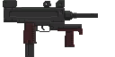 |
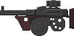 |
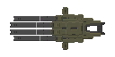 |
Infiltrator |
Flechette |
Mitrailleuse |
It is an open-bolt SMG that uses 10mm high-velocity flechette rounds. It has excellent penetrating, firing rate , and controllability, but its ballistic characteristics are unstable and it should be used at close range. A sound suppressor can be installed as an option. |
None. |
Sacred irons with multiple barrels and chambers existed in the past. However, due to their complex mechanisms, there were only a few left that could withstand practical use. The relic you have brought has overcome these shortcomings with remarkable precision. I wonder where such a thing came from. |
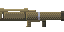 |
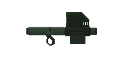 |
Law |
Flash II |
M772LAW is a personal-carry rocket launcher that can project a 66mm HEAT rocket that is highly effective against armored targets. It is capable of destroying most armored vehicles, although the velocity of the projectile is slow and it is necessary to get close enough to hit the target. |
The XM9202 Flash II is a recoilless gun for personal carry that can project 66mm surface to surface non-guided missiles that is highly effective against armored targets. A simple built-in reloading device ensures it's rapid-firing performance. |
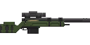 |
Whale Gun |
"Whale Gun" is a bolt-action rifle that uses 20x99mm rounds and can be fired with either AP or HE rounds depending on the target. Developed for the purpose of hunting land whales in remote areas where support is difficult to come by, the Whale Gun will meet your expectations with it's reliability and accuracy. |
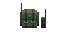 |
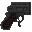 |
|
Detonator |
Landmine |
Designator |
The detonator can detonate a remote satchel of plastic explosives. The high explosives can be used for both anti-material and anti-armor purpose. |
A landmine for anti-armor purposes, and it's safe to step on it because it's equipped with IFF, but don't even try it, okay? |
This laser designator can directly target the object when fire support/air support is needed. |
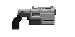 |
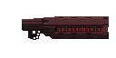 |
Fusion Cannon/Zeus Cannon |
Purifier |
The Tech.50 Fusion Cannon is a personal plasma weapon that uses a fusion battery and its plasma bolt is effective in both anti-personnel and anti-materiel purpose but is especially effective against precision machinery. It can also project a powerful plasma bolt in exchange for the life of the device. |
...Don't know. I thought you brought it to me. Shouldn't you be the one who knows better? |
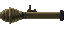 |
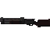 |
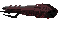 |
SSM Launcher |
Blunderbuss |
Redeemer |
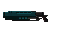 |
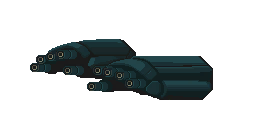 |
|
Hyper Blaster |
Painkiller |
Angelic Rifle I |
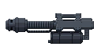 |
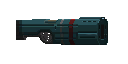 |
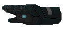 |
Angelic Rifle II |
Angelic Rifle III |
Angelic Rifle IV |